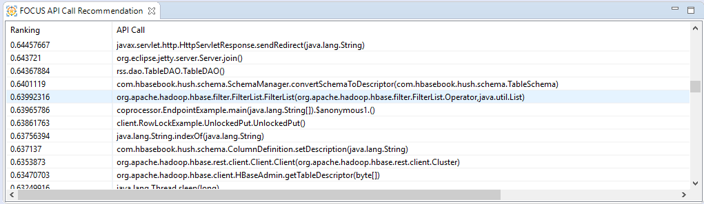
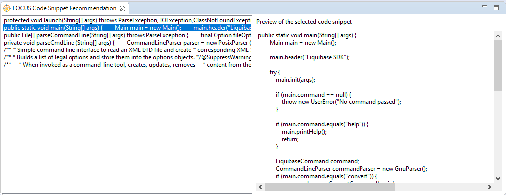

FOCUS API Call recommendation
The FOCUS API Call recommendation can be used to suggest an API call, a method that can be useful to continue with the implementation of the currently edited method.
To initiate a FOCUS API Call recommendation open a Java editor, place the cursor inside the method that you want to request the recommendation to, and click on the FOCUS API Call recommendation button in the menu, or you can use the Ctrl+Shift+X F key combination. The FOCUS API Call feature can be used only with methods that initiate other method calls in their body. After this, the FOCUS API Call recommendation view will show up, displaying the results of the request in a table. The recommended API Calls can be sorted by their rank value or by their name by clicking on the header of the columns. The cell that contains the name of the API Call can be selected, so it can be copied to the clipboard and pasted anywhere in the editor.

FOCUS - API Call recommendation view
FOCUS Code Snippet recommendation
The FOCUS Code Snippet recommendation can be used to suggest code snippets that can be helpful to continue the implementation of the currently edited method.
To initiate a FOCUS Code Snippet recommendation open a Java editor, place the cursor inside the method that you want to request the recommendation to, and click on the FOCUS Code Snippet recommendation button in the menu, or you can use the Ctrl+Shift+X S key combination. The FOCUS API Call feature can be used only with methods that initiate other method calls in their body. After this, the FOCUS Code Snippet recommendation view will show up, displaying the results of the request in a list on the left side of the view. The recommended Code Snippets can be selected by clicking on them in the list. The selected Code Snippet will we shown in the preview windows in the right side of the FOCUS Code Snippet recommendation view. In the preview window the Code Snippet can be selected, so it can be copied to the clipboard and pasted anywhere in the editor.

FOCUS - Code Snippet recommendation view